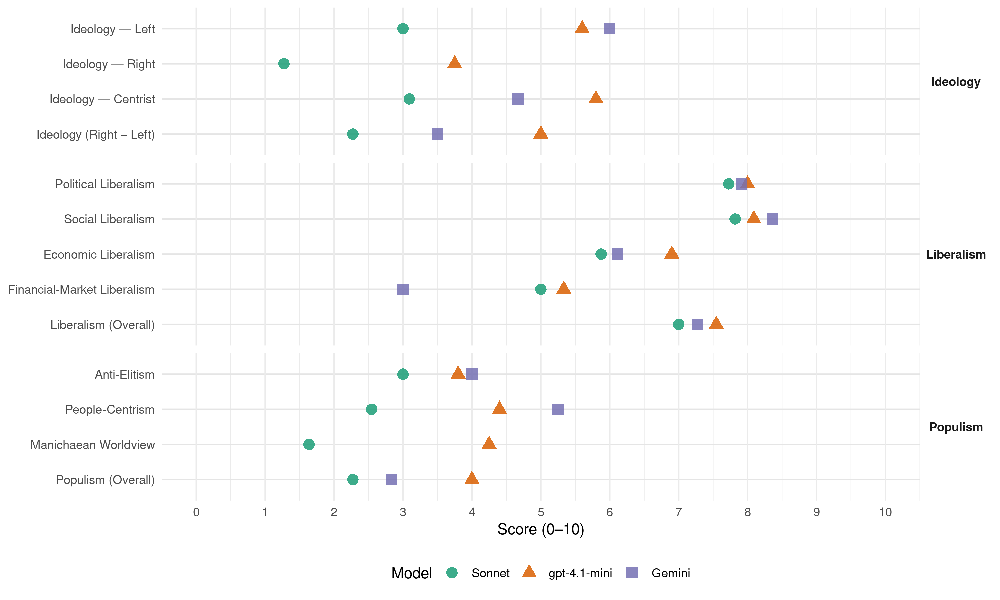

DéFI (Belgium, 2019)
manifesto_id 21912_201905
Get full text: This site shows derived annotations and short verbatim quotes only. The full manifesto text is © Manifesto Project / WZB — obtain it via manifesto-project.wzb.eu using the manifesto_id above.
Headline scores
| Dimension | Sonnet | gpt-4.1-mini | Gemini |
|---|---|---|---|
| Populism (Overall) | 2.3 | 4.0 | 2.8 |
| Anti-Elitism | 3.0 | 3.8 | 4.0 |
| People-Centrism | 2.5 | 4.4 | 5.2 |
| Manichaean Worldview | 1.6 | 4.2 | – |
| Ideology (Right − Left) | 2.3 | 5.0 | 3.5 |
| Liberalism (Overall) | 7.0 | 7.5 | 7.3 |
| Political Liberalism | 7.7 | 8.0 | 7.9 |
| Social Liberalism | 7.8 | 8.1 | 8.4 |
| Economic Liberalism | 5.9 | 6.9 | 6.1 |
| Financial-Market Liberalism | 5.0 | 5.3 | 3.0 |
Evidence per dimension
Economic Liberalism
Gemini · score 6.0 · verified · chunk 1
“Soutenir l’initiative privée”
Soutenir les acteurs de l’économie circulaire 181 Proposition : Renforcer de manière significative la part de produits recyclés pour les marchés publics 182 Proposition : Soutenir l’initiative privée dans l’économie sociale
Gemini · score 7.0 · verified · chunk 2
“favoriser l’immigration économique”
notre Etat a tout intérêt à favoriser l’immigration économique sur la base des besoins économiques qu’un
Gemini · score 5.0 · verified · chunk 3
“conseils d’administration des sociétés cotées”
Depuis 2011, les conseils d’administration des sociétés cotées, des entreprises publiques autonomes et de la
Gemini · score 6.0 · verified · chunk 5
“projet politique à dominante libérale sociale”
DéFI, par son projet politique à dominante libérale sociale, estime que la fonction publique
Gemini · score 6.0 · verified · chunk 6
“développer le commerce international de ces pays”
Soutenir l’innovation et la création d’entreprises et développer le commerce international de ces pays, en favorisant l’accès de leurs produits dans les pays du Nord
Gemini · score 6.0 · verified · chunk 7
“soutenir l’esprit d’entreprise”
Soutenir l’initiative privée dans l’économie sociale, par la création de groupements d’employeurs DéFI entend soutenir l’esprit d’entreprise dans ce secteur.
Gemini · score 6.0 · verified · chunk 8
“concurrence déloyale entre des “amateurs””
un risque de concurrence déloyale entre des “amateurs” et des professionnels qui sont soumis à
Gemini · score 6.0 · verified · chunk 9
“régulateur puissant de l’économie de marché”
transition écologique doit être un régulateur puissant de l’économie de marché et pas un vecteur de décroissance.
Gemini · score 7.0 · verified · chunk 10
“garantir la liberté de choix”
focaliser sur les mesures d’investissements structurels, susceptibles de garantir la liberté de choix. En l’état, il s’agit de
gpt-4.1-mini · score 7.0 · verified · chunk 1
“fiscalité juste et soit un vecteur de progrès”
Nous voulons un Etat progressiste, protecteur des libertés, garant de l’égalité entre hommes et femmes, dont la fiscalité soit juste et soit un vecteur de progrès, dont les institutions judiciaires sont enfin pleinement respectées.
gpt-4.1-mini · score 8.0 · verified · chunk 2
“immigration économique sur la base des besoins économiques”
Par conséquent, notre Etat a tout intérêt à favoriser l’immigration économique sur la base des besoins économiques qu’un consortium d’autorités publiques (Myria, Bureau du plan, Banque nationale…) sera chargé d’évaluer de manière objective et permanente au regard de projections démographiques…
gpt-4.1-mini · score 8.0 · verified · chunk 3
“libéral, notamment les cotisations sociales”
Remplacer progressivement les droits dérivés par des droits individuels La sécurité sociale a été conçue à une époque où le mari/père était le seul soutien financier de la famille. Avec ses cotisations sociales, il pouvait couvrir contre les aléas de l’existence ses enfants et sa femme - qui ne travaillaient généralement pas.
gpt-4.1-mini · score 7.0 · verified · chunk 5
“instaurer une procédure simplifiée, consistant dans le dépôt de l’acte signé par les parties et par leurs avocats au greffe du tribunal”
Proposition : Donner force exécutoire à certains actes d’avocat Un titre exécutoire est un acte juridique constatant officiellement un droit. Il permet à son titulaire d’obtenir l’application de son droit, comme le paiement d’une dette. C’est le cas des jugements et des actes notariés, mais pas des actes d’avocat. Les barreaux estiment pourtant certains actes d’avocat doivent pouvoir jouir d’une force exécutoire. L’avocat prête en effet déjà son concours soit dans le cadre du processus menant à l’obtention d’un titre exécutoire judiciaire ou «parajudiciaire», soit dans l’accomplissement d’actes particulièrement importants s’inscrivant dans le cadre d’une procédure judiciaire. DéFI entend donc instaurer une procédure simplifiée, consistant dans le dépôt de l’acte signé par les parties et par leurs avocats au greffe du tribunal, qui aura pour effet de conférer la force exécutoire à tout accord en matière d’obligations pécuniaires conclu par l’intermédiaire d’avocats.
gpt-4.1-mini · score 5.0 · verified · chunk 6
“l’accès de leurs produits dans les pays du Nord et leur circulation entre pays du Sud”
La coopération au développement doit donc agir sur les structures : Soutenir l’innovation et la création d’entreprises et développer le commerce international de ces pays, en favorisant l’accès de leurs produits dans les pays du Nord et leur circulation entre pays du Sud, ce qui implique l’abolition des barrières douanières et des entraves équivalentes ainsi que celle des subventions européennes à l’exportation des productions agricoles vers les pays du Sud ; Favoriser l’État de droit économique, c’est-à-dire l’instauration d’un cadre législatif stable de la propriété, de l’entreprise et du commerce ; Favoriser l’État de droit politique, c’est-à-dire un équilibre des pouvoirs constitutionnels et le rôle des sociétés civiles.
gpt-4.1-mini · score 7.0 · verified · chunk 7
“simplifier la fiscalité en diminuant la fiscalité sur les revenus faibles ou moyens”
Il est désormais plus que temps de simplifier la fiscalité en diminuant la fiscalité sur les revenus faibles ou moyens et, pour ce faire, en supprimant les niches fiscales ou déductions d’impôts, ainsi que d’autres avantages accordés comme autant de privilèges à des catégories toujours plus segmentées de contribuables.
gpt-4.1-mini · score 7.0 · verified · chunk 8
“réductions des cotisations patronales”
Nous voulons permettre la semaine de 4 jours avec maintien du salaire pour l’employé et embauche compensatoire par l’employeur, via un système de réductions des cotisations patronales. Les secteurs intensifs en main d’oeuvre peu qualifiée sont susceptibles d’être intéressés pour “rentabiliser” des équipements et infrastructures, et cela permettrait de créer des emplois dans une catégorie de chômeurs peu armés sur le marché de l’emploi.
gpt-4.1-mini · score 7.0 · verified · chunk 9
“marché, concurrence, entreprise, fiscalité, commerce, régulation, privatisation”
…le texte traite du marché, concurrence, entreprise, fiscalité, commerce, régulation, privatisation…
gpt-4.1-mini · score 6.0 · verified · chunk 10
“favorisera la réappropriation de l’énergie par les citoyens”
DéFI soutiendra massivement le développement les circuits courts de distribution de l’électricité via les microréseaux et l’autoconsommation individuelle ou collective. Cette dynamique génèrera une création nette d’emplois non délocalisables, favorisera la réappropriation de l’énergie par les citoyens et offrira, de surcroît, une meilleure résilience.
gpt-4.1-mini · score 7.0 · verified · chunk 11
“ressources fiscales, afin d’atténuer les effets néfastes de la sixième réforme de l’Etat”
Proposition : Exiger un juste retour financier au bénéfice de la Région bruxelloise en matière de ressources fiscales, afin d’atténuer les effets néfastes de la sixième réforme de l’Etat et procéder à une évaluation précise des effets de la Sixième Réforme de l’Etat en termes de moyens budgétaires accordés aux entités fédérées francophones.
Sonnet · score 6.0 · verified · chunk 1
“Renforcer le dispositif du Tax shelter”
Proposition : Renforcer le dispositif du Tax shelter pour les start-ups et les entreprises en croissance
Sonnet · score 7.0 · verified · chunk 2
“favoriser l’immigration économique sur la base des besoins économiques”
notre Etat a tout intérêt à favoriser l’immigration économique sur la base des besoins économiques qu’un consortium d’autorités publiques sera chargé d’évaluer
Sonnet · score 5.0 · verified · chunk 3
“renforcer la présence des femmes sur le marché du travail”
renforcer la présence des femmes sur le marché du travail; renforcer l’égalité des femmes et des hommes dans la sphère privée
Sonnet · score 6.0 · verified · chunk 4
“réglementation prudente et encadrée du marché du cannabis”
c’est le moment pour faire évoluer notre régime actuel de prohibition vers une réglementation prudente et encadrée du marché du cannabis
Sonnet · score 5.0 · verified · chunk 5
“recours aux partenariats-publics-privés”
Proposition : Abandonner le recours aux partenariats-publics-privés (PPP) pour les rénovations et constructions de prisons
Sonnet · score 5.0 · mixed · chunk 6
“logique de privatisation de services publics”
elle induit une vision de démantèlement de l’Etat à laquelle DéFI ne souscrit pas et une logique de privatisation de services publics au-delà du 31 décembre 2020
Sonnet · score 6.0 · mixed · chunk 7
“simplifier la fiscalité en diminuant la fiscalité”
Il est désormais plus que temps de simplifier la fiscalité en diminuant la fiscalité sur les revenus faibles ou moyens
Sonnet · score 5.0 · mixed · chunk 8
“réduire les cotisations minimales pour les indépendants”
DéFI entend promouvoir les mesures suivantes afin d’encore réduire les différences de statut : réduire les cotisations minimales pour les indépendants pour les trois premières années d’activités.
Sonnet · score 6.0 · verified · chunk 9
“transition écologique doit être un régulateur puissant de l’économie de marché”
DéFI estime que la transition écologique doit être un régulateur puissant de l’économie de marché pas un vecteur de décroissance.
Sonnet · score 6.0 · verified · chunk 10
“garantir la liberté de choix”
il est avant tout essentiel de se focaliser sur les mesures d’investissements structurels, susceptibles de garantir la liberté de choix
Sonnet · score 6.0 · verified · chunk 11
“prospérité économique et du bien-être”
au bénéfice de la prospérité économique et du bien-être de tous
Financial-Market Liberalism
Gemini · score 3.0 · verified · chunk 6
“nous refusons la logique d’une banque d’Etat”
DéFI ne s’opposera pas à toute privatisation ou entrée en Bourse de Belfius car nous refusons la logique d’une banque d’Etat .
Gemini · score 3.0 · verified · chunk 7
“taxe sur les transactions financières”
En collaboration avec les différentes instances européennes, DéFI soutient l’introduction d’une taxe sur les transactions financières. Le taux de la taxe serait fixé
gpt-4.1-mini · score 7.0 · verified · chunk 2
“Banque nationale”
Par conséquent, notre Etat a tout intérêt à favoriser l’immigration économique sur la base des besoins économiques qu’un consortium d’autorités publiques (Myria, Bureau du plan, Banque nationale…) sera chargé d’évaluer de manière objective et permanente au regard de projections démographiques…
gpt-4.1-mini · score 3.0 · verified · chunk 6
“couper les vivres du terrorisme”
Proposition : Accélérer la lutte contre le financement du terrorisme et geler les sources de financement des organisations terroristes Selon le Fonds monétaire international (FMI), les fonds blanchis ou destinés au financement du terrorisme représenteraient entre 400 et mille milliards d’euros, soit entre 2,5 et 5 % du PIB mondial. Ces chiffres démontrent qu’il est plus que jamais indispensable de couper les vivres du terrorisme.
gpt-4.1-mini · score 6.0 · verified · chunk 7
“taxe sur les transactions financières”
DéFI soutient l’introduction d’une taxe sur les transactions financières. Le taux de la taxe serait fixé entre 0,1% et 0,5% pour les échanges d’actions et d’obligations et entre 0,01% et 0,05% à pour les produits dérivés financiers.
Sonnet · score 5.0 · verified · chunk 1
“Instaurer une taxe sur les transactions financières”
Proposition : Instaurer une taxe sur les transactions financières — 4.1.2. Lutte contre la fraude fiscale
Sonnet · score 6.0 · verified · chunk 6
“privatisation ou entrée en Bourse de Belfius”
DéFI ne s’opposera pas à toute privatisation ou entrée en Bourse de Belfius car nous refusons la logique d’une banque d’Etat
Sonnet · score 4.0 · mixed · chunk 7
“taxe sur les transactions financières”
DéFI soutient l’introduction d’une taxe sur les transactions financières. Le taux de la taxe serait fixé entre 0,1% et 0,5%
Sonnet · score 4.0 · verified · chunk 8
“interdire des placements spéculatifs à risque”
un fonds dont le contrôle sera assumé par l’État pour interdire des placements spéculatifs à risque. L’objectif de cette réforme est d’élargir l’assiette de financement des pensions.
Sonnet · score 5.0 · verified · chunk 9
“remises de prix secrètes doivent disparaître”
Il faut davantage d’ouverture et de transparence: sur les décisions de remboursement, et sur la totalité des publications et des données de recherche. Les remises de prix secrètes doivent disparaître.
Political Liberalism
Gemini · score 8.0 · verified · chunk 1
“Dans un système démocratique”
On citera d’ailleurs un arrêt de la Cour européenne des Droits de l’Homme : « Dans un système démocratique, les actions ou omissions du gouvernement doivent se trouver placées sous le contrôle attentif
Gemini · score 8.0 · verified · chunk 2
“un magistrat du pouvoir judiciaire”
et sera présidée par un magistrat du pouvoir judiciaire. Ce n’est qu’en cas de
Gemini · score 8.0 · verified · chunk 3
“garantissant la liberté d’opinion”
La Constitution belge, garantissant la liberté d’opinion, de manifestation et de cultes, a jeté
Gemini · score 8.0 · verified · chunk 4
“indispensable pilier de notre État de droit”
déjà malmené par les gouvernements précédents, alors qu’il est le troisième pouvoir constitué du pays, indispensable pilier de notre État de droit. Ainsi, les magistrats travaillent dans des locaux
Gemini · score 8.0 · verified · chunk 5
“indépendance à l’égard de l’exécutif”
présente les garanties d’indépendance à l’égard de l’exécutif et des parties
Gemini · score 8.0 · verified · chunk 6
“respect de l’Etat de droit”
un objectif de servir l’intérêt général, fondé sur le respect de l’Etat de droit et le service à l’usager.
Gemini · score 8.0 · verified · chunk 7
“réformer la démocratie représentative”
Les présentes propositions ont pour objet de réformer la démocratie représentative (en clair, l’élection des assemblées parlementaires, de certains organes communaux
Gemini · score 8.0 · verified · chunk 8
“garantisse le droit de grève”
par une législation qui garantisse le droit de grève et ses corollaires tout en consacrant
Gemini · score 7.0 · verified · chunk 9
“fédéralisme de respect et d’estime réciproques”
Cette volonté d’un fédéralisme de respect et d’estime réciproques est mise à mal non seulement
Gemini · score 8.0 · verified · chunk 10
“gardienne des droits et libertés”
faire de la Cour constitutionnelle non seulement une Cour gardienne des droits et libertés mais également gardienne de l’équilibre des pouvoirs
Gemini · score 8.0 · verified · chunk 11
“respect des décisions de justice”
Proposition : Exiger le respect des décisions de justice et des recommandations internationales
gpt-4.1-mini · score 9.0 · verified · chunk 1
“le respect des droits humains ; convictions, quel qu’en soit le prix”
DéFI se caractérise par la fidélité à ses principes, en particulier en termes de gouvernance ; par l’intransigeance sur le respect des droits humains ; convictions, quel qu’en soit le prix.
gpt-4.1-mini · score 8.0 · verified · chunk 2
“droit au regroupement familial”
Proposition : Etendre le droit au regroupement familial aux parents d’enfants mineurs régularisés ou bénéficiant d’une protection internationale De par leur parcours migratoire et la situation difficile dans leur pays d’origine, les personnes reconnues comme réfugiés en Belgique sont souvent séparées de leurs proches…
gpt-4.1-mini · score 9.0 · verified · chunk 3
“la liberté d’opinion, de manifestation et de cultes”
Inscrire le principe de laicité politique dans la Constitution Les fondateurs du libéralisme ont prôné la stricte séparation entre le domaine privé des croyances et celui du gouvernement ou de l’autorité publique. Il en résulte qu’aucune autorité politique n’a compétence pour réglementer les convictions intimes des citoyens. La Constitution belge, garantissant la liberté d’opinion, de manifestation et de cultes, a jeté les fondements d’une société pluraliste et, par voie de conséquence, de la neutralité de l’Etat.
gpt-4.1-mini · score 9.0 · verified · chunk 4
“la Belgique est un État laïque, qui garantit les droits de l’homme, les libertés fondamentales et l’égalité des femmes et des hommes”
DéFI prône l’inscription du principe de la laïcité de l’Etat dans la Constitution belge et dans la charte constitutive de la Fédération Wallonie-Bruxelles par l’inscription d’un article libellé comme suit: “La Belgique est un État laïque, qui garantit les droits de l’homme, les libertés fondamentales et l’égalité des femmes et des hommes.” La proposition vise donc la laïcité politique, de l’Etat, à savoir la volonté de construire une société juste, progressiste et fraternelle, dotée d’institutions publiques impartiales, garante de la dignité de la personne et des droits humains assurant à chacun la liberté de pensée et d’expression, ainsi que l’égalité de tous devant la loi sans distinction de sexe, d’origine, de culture ou de conviction et considérant que les options confessionnelles ou non confessionnelles relèvent exclusivement de la sphère privée des personnes.
gpt-4.1-mini · score 8.0 · verified · chunk 5
“inscrire dans la loi, l’obligation pour un député fédéral, un ministre fédéral ou un sénateur, de démissionner”
Proposition : Imposer la démission d’un mandataire au sein du Parlement ou du gouvernement fédéral en cas de poursuites pénales DéFI propose d’inscrire dans la loi, l’obligation pour un député fédéral, un ministre fédéral ou un sénateur, de démissionner de son mandat en cas d’inculpation par un juge d’instruction, de citation directe du parquet devant le tribunal correctionnel, ou de décision de renvoi prise par une juridiction d’instruction devant la juridiction compétente, pour tout délit ou crime susceptible d’entraîner une peine d’emprisonnement d’une durée égale ou supérieure à 1 an.
gpt-4.1-mini · score 7.0 · verified · chunk 6
“le respect des décisions de justice et des recommandations internationales en matière de droits linguistiques”
Proposition : Transposer au plan interne les principes défendus au plan international DéFI exigera le respect des décisions de justice et des recommandations internationales en matière de droits linguistiques. L’État de droit implique que l’État et ses entités fédérées, au même titre que tout citoyen, respectent la loi et les décisions de justice qui s’imposent à eux.
gpt-4.1-mini · score 8.0 · verified · chunk 7
“méfiance grandissante des citoyens à l’égard de leurs institutions”
Depuis plusieurs années, on observe une méfiance grandissante des citoyens à l’égard de leurs institutions et de la politique. Elle se manifeste notamment par une confiance très basse des citoyens envers le Parlement, le Gouvernement et les partis, une abstention en hausse lors des élections, une baisse des adhésions aux partis politiques et du militantisme, l’apparition de partis anti système, etc.
gpt-4.1-mini · score 7.0 · verified · chunk 8
“la concertation sociale est un des piliers de l’efficacité des politiques économiques et sociales dans notre pays”
Redonner force au dialogue entre partenaires sociaux La concertation sociale est un des piliers de l’efficacité des politiques économiques et sociales dans notre pays. Il faut rétablir la confiance entre l’autorité publique et les partenaires sociaux en précisant les domaines relatifs à l’organisation du travail et à la protection sociale qui requièrent l’accord des partenaires sociaux.
gpt-4.1-mini · score 7.0 · verified · chunk 9
“la démocratie, les droits, élections, tribunaux, médias”
…mention politique incluant la démocratie, les droits, élections, tribunaux, médias et institutions…
gpt-4.1-mini · score 7.0 · verified · chunk 10
“respect des droits (politiques, linguistiques, culturels) des citoyens et des minorités”
Pour DéFI, un fédéralisme équilibré est celui qui confère à l’Etat fédéral le rôle de gardien de l’équilibre entre d’une part, le respect des droits (politiques, linguistiques, culturels) des citoyens et des minorités et d’autre part, la nécessaire autonomie des entités fédérées, et qui s’articulerait autour de cinq axes: Il ne peut diminuer de manière substantielle des droits politiques et linguistiques à des minorités reconnues ; il doit au contraire contribuer à les renforcer.
gpt-4.1-mini · score 9.0 · verified · chunk 11
“respect des décisions de justice et des recommandations internationales”
Proposition : Exiger le respect des décisions de justice et des recommandations internationales en matière de droits linguistiques. L’État de droit implique que l’État et ses Régions, au même titre que tout citoyen, respectent la loi et les décisions de justice qui s’imposent à eux, qu’il s’agisse du libre emploi des langues consacré à l’article 30 de la Constitution, du libre accès au logement, de l’utilisation du français dans les organes délibératifs des communes à facilités ou encore du respect du suffrage universel.
Sonnet · score 9.0 · verified · chunk 1
“Légitimer la démocratie représentative”
3.3.1. Légitimer la démocratie représentative — Proposition : Assurer un décumul effectif des mandats de député et de celui de mandataire exécutif communal
Sonnet · score 8.0 · verified · chunk 2
“débat démocratique et transparent chaque année au parlement”
La liste des pays tiers sûrs doit faire l’objet d’un débat démocratique et transparent chaque année au parlement fédéral
Sonnet · score 8.0 · verified · chunk 3
“droits humains dans les différents Etats membres”
un ‘Examen Périodique Européen’ qui permettra de contrôler l’action des Etats membres en matière de respect des droits humains
Sonnet · score 8.0 · verified · chunk 4
“indépendance du pouvoir judiciaire”
il est devenu urgent de préserver l’autorité et l’indépendance du pouvoir judiciaire, mais aussi de garantir le maintien de la justice comme service public
Sonnet · score 8.0 · verified · chunk 5
“indépendance des juges dans l’exercice”
à l’instar de l’article 151 de la Constitution consacrant l’indépendance des juges dans l’exercice de leurs compétences, l’indépendance des avocats
Sonnet · score 8.0 · verified · chunk 6
“contrôle parlementaire sur les décisions”
le contrôle parlementaire sur les décisions en matière de défense; le respect des droits fondamentaux dans les opérations militaires menées à l’étranger
Sonnet · score 8.0 · verified · chunk 7
“Légitimer la démocratie représentative”
3.3.1. Légitimer la démocratie représentative Depuis plusieurs années, on observe une méfiance grandissante
Sonnet · score 6.0 · verified · chunk 8
“garantisse le droit de grève et ses corollaires”
les ambiguïtés actuelles du système belge, critiquées par le CEDS, doivent être levées par une législation qui garantisse le droit de grève et ses corollaires tout en consacrant le droit des non grévistes de travailler.
Sonnet · score 7.0 · verified · chunk 9
“efficacité démocratique de l’Etat”
5. L’efficacité démocratique de l’Etat 5.1. Pour un fédéralisme plus équilibré dans ses rapports Nord Sud
Sonnet · score 7.0 · verified · chunk 10
“gardienne de l’équilibre des pouvoirs, et de l’Etat de droit”
faire de la Cour constitutionnelle non seulement une Cour gardienne des droits et libertés mais également gardienne de l’équilibre des pouvoirs, et de l’Etat de droit
Sonnet · score 8.0 · verified · chunk 11
“respect des décisions de justice”
Exiger le respect des décisions de justice et des recommandations internationales en matière de droits linguistiques. L’État de droit implique
Liberalism (Overall)
Gemini · score 7.0 · verified · chunk 1
“Dans un système démocratique”
On citera d’ailleurs un arrêt de la Cour européenne des Droits de l’Homme : « Dans un système démocratique, les actions ou omissions du gouvernement doivent se trouver placées sous le contrôle attentif
Gemini · score 8.0 · verified · chunk 2
“respecter les droits fondamentaux”
légitime, mais doit impérativement respecter les droits fondamentaux. Les enfants concernés ne peuvent en
Gemini · score 7.0 · verified · chunk 3
“garantissant la liberté d’opinion”
La Constitution belge, garantissant la liberté d’opinion, de manifestation et de cultes, a jeté
Gemini · score 9.0 · verified · chunk 4
“indispensable pilier de notre État de droit”
déjà malmené par les gouvernements précédents, alors qu’il est le troisième pouvoir constitué du pays, indispensable pilier de notre État de droit. Ainsi, les magistrats travaillent dans des locaux
Gemini · score 7.0 · verified · chunk 5
“projet politique à dominante libérale sociale”
DéFI, par son projet politique à dominante libérale sociale, estime que la fonction publique
Gemini · score 6.0 · verified · chunk 6
“respect de l’Etat de droit”
un objectif de servir l’intérêt général, fondé sur le respect de l’Etat de droit et le service à l’usager.
Gemini · score 6.0 · verified · chunk 7
“réformer la démocratie représentative”
Les présentes propositions ont pour objet de réformer la démocratie représentative (en clair, l’élection des assemblées parlementaires, de certains organes communaux
Gemini · score 7.0 · verified · chunk 8
“garantisse le droit de grève”
par une législation qui garantisse le droit de grève et ses corollaires tout en consacrant
Gemini · score 7.0 · verified · chunk 9
“régulateur puissant de l’économie de marché”
transition écologique doit être un régulateur puissant de l’économie de marché et pas un vecteur de décroissance.
Gemini · score 8.0 · verified · chunk 10
“gardienne des droits et libertés”
faire de la Cour constitutionnelle non seulement une Cour gardienne des droits et libertés mais également gardienne de l’équilibre des pouvoirs
Gemini · score 8.0 · verified · chunk 11
“respect des décisions de justice”
Proposition : Exiger le respect des décisions de justice et des recommandations internationales
gpt-4.1-mini · score 8.0 · verified · chunk 1
“respect des droits humains ; convictions, quel qu’en soit le prix”
DéFI se caractérise par la fidélité à ses principes, en particulier en termes de gouvernance ; par l’intransigeance sur le respect des droits humains ; convictions, quel qu’en soit le prix.
gpt-4.1-mini · score 8.0 · verified · chunk 2
“droits fondamentaux”
…il convient de garantir le respect du droit d’aider ou d’héberger un migrant pour des raisons principalement humanitaires, conformément à l’article 77 de la loi du 15 décembre 1980 sur l’accès au territoire, le séjour, l’établissement et l’éloignement des étrangers…
gpt-4.1-mini · score 9.0 · verified · chunk 3
“la liberté d’opinion, de manifestation et de cultes”
Inscrire le principe de laicité politique dans la Constitution Les fondateurs du libéralisme ont prôné la stricte séparation entre le domaine privé des croyances et celui du gouvernement ou de l’autorité publique. Il en résulte qu’aucune autorité politique n’a compétence pour réglementer les convictions intimes des citoyens. La Constitution belge, garantissant la liberté d’opinion, de manifestation et de cultes, a jeté les fondements d’une société pluraliste et, par voie de conséquence, de la neutralité de l’Etat.
gpt-4.1-mini · score 9.0 · verified · chunk 4
“la Belgique est un État laïque, qui garantit les droits de l’homme, les libertés fondamentales et l’égalité des femmes et des hommes”
DéFI prône l’inscription du principe de la laïcité de l’Etat dans la Constitution belge et dans la charte constitutive de la Fédération Wallonie-Bruxelles par l’inscription d’un article libellé comme suit: “La Belgique est un État laïque, qui garantit les droits de l’homme, les libertés fondamentales et l’égalité des femmes et des hommes.” La proposition vise donc la laïcité politique, de l’Etat, à savoir la volonté de construire une société juste, progressiste et fraternelle, dotée d’institutions publiques impartiales, garante de la dignité de la personne et des droits humains assurant à chacun la liberté de pensée et d’expression, ainsi que l’égalité de tous devant la loi sans distinction de sexe, d’origine, de culture ou de conviction et considérant que les options confessionnelles ou non confessionnelles relèvent exclusivement de la sphère privée des personnes.
gpt-4.1-mini · score 8.0 · verified · chunk 5
“consacrer dans la Constitution, et à l’instar de l’article 151 de la Constitution consacrant l’indépendance des juges dans l’exercice de leurs compétences, l’indépendance des avocats”
Proposition : Inscrire le principe d’indépendance et du secret professionnel de l’avocat dans la Constitution Les avocats sont appelés à défendre leur client en toute indépendance, en l’absence de conflit d’intérêts ou de considérations politiques ou financières. Cette règle ne dispose toutefois d’aucune assise légale ou constitutionnelle alors qu’il s’agit d’un principe démocratique fondamental. DéFI propose par conséquent de consacrer dans la Constitution, et à l’instar de l’article 151 de la Constitution consacrant l’indépendance des juges dans l’exercice de leurs compétences, l’indépendance des avocats.
gpt-4.1-mini · score 5.0 · verified · chunk 6
“le respect des décisions de justice et des recommandations internationales en matière de droits linguistiques”
Proposition : Transposer au plan interne les principes défendus au plan international DéFI exigera le respect des décisions de justice et des recommandations internationales en matière de droits linguistiques. L’État de droit implique que l’État et ses entités fédérées, au même titre que tout citoyen, respectent la loi et les décisions de justice qui s’imposent à eux.
gpt-4.1-mini · score 7.0 · verified · chunk 7
“simplifier la fiscalité en diminuant la fiscalité sur les revenus faibles ou moyens”
Il est désormais plus que temps de simplifier la fiscalité en diminuant la fiscalité sur les revenus faibles ou moyens et, pour ce faire, en supprimant les niches fiscales ou déductions d’impôts, ainsi que d’autres avantages accordés comme autant de privilèges à des catégories toujours plus segmentées de contribuables.
gpt-4.1-mini · score 7.0 · verified · chunk 8
“la concertation sociale est un des piliers de l’efficacité des politiques économiques et sociales dans notre pays”
Redonner force au dialogue entre partenaires sociaux La concertation sociale est un des piliers de l’efficacité des politiques économiques et sociales dans notre pays. Il faut rétablir la confiance entre l’autorité publique et les partenaires sociaux en précisant les domaines relatifs à l’organisation du travail et à la protection sociale qui requièrent l’accord des partenaires sociaux.
gpt-4.1-mini · score 7.0 · verified · chunk 9
“la démocratie, les droits, marché, concurrence, égalité, régulation”
…le manifeste traite de démocratie, droits, marché, concurrence, égalité, régulation…
gpt-4.1-mini · score 7.0 · verified · chunk 10
“respect des droits (politiques, linguistiques, culturels) des citoyens et des minorités”
Pour DéFI, un fédéralisme équilibré est celui qui confère à l’Etat fédéral le rôle de gardien de l’équilibre entre d’une part, le respect des droits (politiques, linguistiques, culturels) des citoyens et des minorités et d’autre part, la nécessaire autonomie des entités fédérées, et qui s’articulerait autour de cinq axes: Il ne peut diminuer de manière substantielle des droits politiques et linguistiques à des minorités reconnues ; il doit au contraire contribuer à les renforcer.
gpt-4.1-mini · score 8.0 · verified · chunk 11
“respect des décisions de justice et des recommandations internationales”
Proposition : Exiger le respect des décisions de justice et des recommandations internationales en matière de droits linguistiques. L’État de droit implique que l’État et ses Régions, au même titre que tout citoyen, respectent la loi et les décisions de justice qui s’imposent à eux, qu’il s’agisse du libre emploi des langues consacré à l’article 30 de la Constitution, du libre accès au logement, de l’utilisation du français dans les organes délibératifs des communes à facilités ou encore du respect du suffrage universel.
Sonnet · score 7.0 · verified · chunk 1
“Etat protecteur des libertés publiques”
1. L’Etat protecteur des libertés publiques et des droits humains — DéFI se caractérise par la fidélité à ses principes, en particulier en termes de gouvernance
Sonnet · score 8.0 · verified · chunk 2
“droits fondamentaux des étrangers”
Cette conférence devra se réunir sur trois thèmes au moins: l’intégration, la migration économique, et les droits fondamentaux des étrangers sans autorisation de séjour
Sonnet · score 8.0 · verified · chunk 3
“droits humains et qui l’obligera ainsi”
un ‘Examen Périodique Européen’ qui permettra de contrôler l’action des Etats membres en matière de respect des droits humains et qui l’obligera ainsi à présenter un bilan
Sonnet · score 8.0 · verified · chunk 4
“droits des femmes et de leur réalité”
il est pourtant urgent de ne plus envisager l’IVG sous l’angle de la société, d’un prétendu ‘ordre moral’, mais sous l’angle des droits des femmes et de leur réalité
Sonnet · score 7.0 · verified · chunk 5
“indépendance des juges dans l’exercice”
à l’instar de l’article 151 de la Constitution consacrant l’indépendance des juges dans l’exercice de leurs compétences, l’indépendance des avocats
Sonnet · score 7.0 · verified · chunk 6
“Etat de droit implique que l’État”
L’État de droit implique que l’État et ses entités fédérées, au même titre que tout citoyen, respectent la loi et les décisions de justice qui s’imposent à eux
Sonnet · score 6.0 · verified · chunk 7
“Très moderne et libérale en 1831”
Très moderne et libérale en 1831, notre Charte fondamentale est aujourd’hui dépassée et anachronique
Sonnet · score 6.0 · verified · chunk 8
“plus grande égalité de traitement, entre les femmes et les hommes”
la sécurité sociale tendra vers l’individualisation des droits et contribuera notamment à une plus grande égalité de traitement, entre les cotisants, et entre les femmes et les hommes.
Sonnet · score 6.0 · verified · chunk 9
“transition écologique doit être un régulateur puissant de l’économie de marché”
DéFI estime que la transition écologique doit être un régulateur puissant de l’économie de marché pas un vecteur de décroissance.
Sonnet · score 7.0 · verified · chunk 10
“gardienne de l’équilibre des pouvoirs, et de l’Etat de droit”
faire de la Cour constitutionnelle non seulement une Cour gardienne des droits et libertés mais également gardienne de l’équilibre des pouvoirs, et de l’Etat de droit
Sonnet · score 7.0 · verified · chunk 11
“L’État de droit implique”
L’État de droit implique que l’État et ses Régions, au même titre que tout citoyen, respectent la loi et les décisions de justice
Anti-Elitism
Gemini · score 3.0 · verified · chunk 1
“non de marchands de peurs”
Nous avons besoin de gestionnaires, qui mettent les mains dans le cambouis. Et non de marchands de peurs qui tentent de faire croire que la complexité du monde peut tenir en un tweet
Gemini · score 4.0 · verified · chunk 6
“une méfiance grandissante des citoyens à l’égard de leurs institutions”
Depuis plusieurs années, on observe une méfiance grandissante des citoyens à l’égard de leurs institutions et de la politique.
Gemini · score 4.0 · verified · chunk 7
“Une classe politique, surtout néerlandophone, se nourrit”
confisque la possibilité de réformer l’État, et de nous réapproprier la Constitution. Une classe politique, surtout néerlandophone, se nourrit peu à peu d’attentes et de revendications d’autonomie
Gemini · score 4.0 · verified · chunk 8
“au mépris de la concertation sociale”
court terme des entreprises au mépris de la concertation sociale. Proposition : Redonner force au dialogue
Gemini · score 5.0 · verified · chunk 9
“le gouvernement De Wever-Michel a rendu”
De plus, le gouvernement De Wever-Michel a rendu les allocations pour les crédits-temps sans motifquasi inaccessibles
gpt-4.1-mini · score 3.0 · verified · chunk 1
“marchands de peurs qui tentent de faire croire que tout est de la faute « de l’Europe », « des étrangers », « des politiques », ou tout simplement « des autres »”
Plus que jamais, nos sociétés sont divisées et cernées par les craintes. Crise sociale, crise économique, crise climatique, crise migratoire : en face de nous, les dangers sont réels. Nous avons besoin de gestionnaires, qui mettent les mains dans le cambouis. Et non de marchands de peurs qui tentent de faire croire que la complexité du monde peut tenir en un tweet, ou que tout est de la faute « de l’Europe », « des étrangers », « des politiques », ou tout simplement « des autres ».
gpt-4.1-mini · score 3.0 · verified · chunk 2
“lutter contre la migration illégale”
…ouvrir davantage de canaux sûrs et légaux, en adéquation avec les aspirations des migrants souhaitant mieux vivre, doit permettre de diminuer les flux de migrants venant de manière irrégulière, et contribue à faire de la migration un enjeu plus juste et moins arbitraire. Par conséquent, notre Etat a tout intérêt à favoriser l’immigration économique sur la base des besoins économiques…
gpt-4.1-mini · score 3.0 · verified · chunk 6
“une classe politique, surtout néerlandophone, se nourrit peu à peu d’attentes et de revendications d’autonomie”
Face au « désenchantement démocratique », de nombreuses voix s’élèvent pour clamer que le pouvoir du peuple ne peut se limiter aux seules échéances électorales. La démocratie participative est conçue comme un remède possible à la crise de défiance qui touche la sphère politique : il s’agit de recréer des liens entre la société civile et les institutions. La démocratie participative n’a pas pour but de remplacer la démocratie représentative élective mais de rapprocher les citoyens de la politique. Il s’agit d’un renforcement de la démocratie qui conserve l’importance de l’élu tout en associant plus largement et plus directement les citoyens à l’élaboration des décisions politiques. La démocratie participative n’est pas la solution miracle mais peut être l’une des mesures permettant de se diriger vers un « ré-enchantement de la politique ». Proposition : Créer un processus de réforme de l’Etat avec les citoyens, la Nova Carta Depuis des dizaines d’années, un même cycle se répète en Belgique. Un cycle qui enferme et confisque la possibilité de réformer l’État, et de nous réapproprier la Constitution. Une classe politique, surtout néerlandophone, se nourrit peu à peu d’attentes et de revendications d’autonomie, faisant gonfler une bulle psychologique et politique qui finit par prendre toute la place. En face, les francophones, généralement peu demandeurs à part un courant régionaliste wallon intermittent, finissent par accepter le principe d’une réforme de l’État qu’ils n’ont pas réellement souhaitée, acculés par le manque de finances (faute d’avoir convenablement négocié la fois précédente) ou par le chantage à la formation de gouvernement. Au final : une réforme de l’État advient, transférant des compétences toujours dans le même sens – depuis l’État fédéral vers les entités fédérées.
gpt-4.1-mini · score 7.0 · verified · chunk 7
“partis anti système”
une abstention en hausse lors des élections, une baisse des adhésions aux partis politiques et du militantisme, l’apparition de partis anti système, etc. Le fossé entre le politique et le citoyen se creuse chaque jour un peu plus.
gpt-4.1-mini · score 3.0 · verified · chunk 10
“la domination de la N-VA dans l’État belge en est la preuve”
Le nationalisme flamand n’en a pas été pour autant rassasié et la domination de la N-VA dans l’État belge en est la preuve. Le confédéralisme est une logique du pouvoir qui permet à la Flandre d’assumer une domination outrancière en Belgique, au détriment de la Wallonie et de Bruxelles.
Sonnet · score 3.0 · verified · chunk 1
“marchands de peurs qui tentent de faire croire”
Nous avons besoin de gestionnaires, qui mettent les mains dans le cambouis. Et non de marchands de peurs qui tentent de faire croire que la complexité du monde peut tenir en un tweet
Sonnet · score 2.0 · mixed · chunk 2
“gouvernement Michel a réduit de manière linéaire le budget”
Le gouvernement Michel a réduit de manière linéaire le budget nécessaire au fonctionnement de Myria, en infraction avec l’arrêté organique
Sonnet · score 1.0 · mixed · chunk 3
“majorité fédérale MR-N-VA a adopté”
la majorité fédérale MR-N-VA a adopté en octobre 2018 une loi qui sort l’avortement du Code pénal pour le mettre dans une loi pénale spécifique
Sonnet · score 3.0 · verified · chunk 4
“gouvernement fédéral ont considérablement fragilisé”
Les coupes budgétaires (-10% entre 2014 et 2019) et les dernières mesures du gouvernement fédéral ont considérablement fragilisé un pouvoir judiciaire déjà malmené
Sonnet · score 2.0 · verified · chunk 5
“clientélisme partisan, soit encore à l’opacité”
souffre d’un déficit d’image positive lié soit à une gestion budgétaire déficiente, soit à un clientélisme partisan, soit encore à l’opacité de certaines structures publiques
Sonnet · score 4.0 · mixed · chunk 6
“traitements pouvant être considérés comme indécents”
afin de compenser les inégalités et tensions sociales que génèrent des traitements pouvant être considérés comme indécents pour les niveaux inférieurs de l’administration
Sonnet · score 3.0 · verified · chunk 7
“la richesse pour un petit nombre”
elle ne serve pas à créer de la richesse pour un petit nombre, à crédit sur notre avenir commun
Sonnet · score 4.0 · verified · chunk 9
“responsables politiques doivent assumer les conséquences”
Les responsables politiques doivent assumer les conséquences de l’inefficacité de leur administration.
Sonnet · score 4.0 · verified · chunk 10
“la domination de la N-VA dans l’État belge”
Le nationalisme flamand n’en a pas été pour autant rassasié et la domination de la N-VA dans l’État belge en est la preuve. Le confédéralisme est une logique du pouvoir
Sonnet · score 2.0 · verified · chunk 11
“territorialité mesquine et rétrograde”
Cette territorialité mesquine et rétrograde à l’heure de la mondialisation et des technologies de l’information
Ideology — Centrist
Gemini · score 4.0 · verified · chunk 6
“rapprocher les citoyens de la politique”
La démocratie participative n’a pas pour but de remplacer la démocratie représentative élective mais de rapprocher les citoyens de la politique.
Gemini · score 5.0 · verified · chunk 7
“rapprocher les citoyens de la politique”
La démocratie participative n’a pas pour but de remplacer la démocratie représentative élective mais de rapprocher les citoyens de la politique. Il s’agit d’un renforcement
Gemini · score 5.0 · verified · chunk 10
“réappropriation de l’énergie par les citoyens”
création nette d’emplois non délocalisables, favorisera la réappropriation de l’énergie par les citoyens et offrira, de surcroît, une meilleure
gpt-4.1-mini · score 6.0 · verified · chunk 1
“nous sommes la formation qui respectera les droits, développera l’économie et protégera les plus précarisés”
Entre ceux qui agitent les peurs et ceux qui promettent des lendemains gratuits et chantants, nous sommes la formation qui respectera les droits, développera l’économie et protégera les plus précarisés. Sans renoncer à nos valeurs.
gpt-4.1-mini · score 7.0 · verified · chunk 2
“notre Etat a tout intérêt à favoriser l’immigration économique”
…ouvrir davantage de canaux sûrs et légaux, en adéquation avec les aspirations des migrants souhaitant mieux vivre, doit permettre de diminuer les flux de migrants venant de manière irrégulière, et contribue à faire de la migration un enjeu plus juste et moins arbitraire. Par conséquent, notre Etat a tout intérêt à favoriser l’immigration économique sur la base des besoins économiques…
gpt-4.1-mini · score 5.0 · verified · chunk 6
“la démocratie participative n’a pas pour but de remplacer la démocratie représentative élective”
Face au « désenchantement démocratique », de nombreuses voix s’élèvent pour clamer que le pouvoir du peuple ne peut se limiter aux seules échéances électorales. La démocratie participative est conçue comme un remède possible à la crise de défiance qui touche la sphère politique : il s’agit de recréer des liens entre la société civile et les institutions. La démocratie participative n’a pas pour but de remplacer la démocratie représentative élective mais de rapprocher les citoyens de la politique. Il s’agit d’un renforcement de la démocratie qui conserve l’importance de l’élu tout en associant plus largement et plus directement les citoyens à l’élaboration des décisions politiques.
gpt-4.1-mini · score 8.0 · verified · chunk 7
“réformer la démocratie représentative”
Les présentes propositions ont pour objet de réformer la démocratie représentative (en clair, l’élection des assemblées parlementaires, de certains organes communaux et les missions de certaines institutions, telles que les provinces).
gpt-4.1-mini · score 3.0 · verified · chunk 10
“Le fédéralisme qui caractérise notre Etat est de plus en plus déséquilibré”
Face à cette évolution que nous considérons comme inéluctable, les francophones doivent avoir la volonté d’adapter leur vision institutionnelle. Le fédéralisme qui caractérise notre Etat est de plus en plus déséquilibré, accentuant une logique qui donne des gages à la construction d’un Etat flamand.
Sonnet · score 3.0 · verified · chunk 1
“Entre ceux qui agitent les peurs”
Entre ceux qui agitent les peurs et ceux qui promettent des lendemains gratuits et chantants, nous sommes la formation qui respectera les droits
Sonnet · score 3.0 · verified · chunk 2
“migration économique est un chantier gigantesque”
La migration économique est un chantier gigantesque, qu’il convient d’ouvrir rapidement.
Sonnet · score 2.0 · verified · chunk 3
“DéFI plaide pour la constitution”
DéFI plaide pour la constitution, à tous niveaux de pouvoir, de gouvernements paritaires
Sonnet · score 3.0 · verified · chunk 4
“DéFI défend ainsi la suppression de toutes sanctions pénales”
DéFI défend ainsi la suppression de toutes sanctions pénales à l’encontre des femmes et des médecins qui pratiquent l’avortement
Sonnet · score 3.0 · verified · chunk 5
“projet politique à dominante libérale sociale”
DéFI, par son projet politique à dominante libérale sociale, estime que la fonction publique est un instrument de l’Etat régalien
Sonnet · score 4.0 · verified · chunk 6
“rapprocher les citoyens de la politique”
La démocratie participative n’a pas pour but de remplacer la démocratie représentative élective mais de rapprocher les citoyens de la politique
Sonnet · score 4.0 · verified · chunk 7
“démocratie représentative élective”
La démocratie participative n’a pas pour but de remplacer la démocratie représentative élective
Sonnet · score 2.0 · verified · chunk 8
“trouver un équilibre entre flexibilité et qualité”
DéFI veut trouver un équilibre entre flexibilité et qualité de vie, en passant par les 3 niveaux de concertation.
Sonnet · score 3.0 · verified · chunk 9
“DéFI est un parti fédéraliste”
DéFI est un parti fédéraliste. Il l’est pour l’Europe et pour la Belgique.
Sonnet · score 4.0 · verified · chunk 10
“fédéralisme de respect et d’estime réciproques”
Cette volonté d’un fédéralisme de respect et d’estime réciproques est mise à mal non seulement par la virulence du nationalisme flamand
Sonnet · score 3.0 · verified · chunk 11
“DéFI estime ce point positif”
Intrinsèquement attaché au fédéralisme, à la démocratie et aux droits des minorités nationales, DéFI estime ce point positif pour l’avenir
Ideology — Left
Gemini · score 6.0 · verified · chunk 9
“Améliorer l’accès financier aux soins”
Proposition : Améliorer l’accès financier aux soins D’après les rapports de performance
gpt-4.1-mini · score 7.0 · verified · chunk 1
“fiscalité inéquitable, échec de l’équilibre budgétaire malgré une vaste austérité”
Nous sortons d’une législature fédérale éprouvante : restrictions budgétaires, désinvestissement dans la justice, politique migratoire marquée par des renoncements aux droits humains, fiscalité inéquitable, échec de l’équilibre budgétaire malgré une vaste austérité…
gpt-4.1-mini · score 6.0 · verified · chunk 2
“lutter contre la traite des êtres humains”
1.2.2. Lutter efficacement contre la traite des êtres humains Les mafias et réseaux exploitent la misère humaine, ce qui est intolérable. Il convient par conséquent de veiller à les identifier et les sanctionner. Proposition : Doter la police et la justice des capacités humaines et matérielles suffisantes…
gpt-4.1-mini · score 4.0 · verified · chunk 6
“la démocratie participative est conçue comme un remède possible à la crise de défiance”
Face au « désenchantement démocratique », de nombreuses voix s’élèvent pour clamer que le pouvoir du peuple ne peut se limiter aux seules échéances électorales. La démocratie participative est conçue comme un remède possible à la crise de défiance qui touche la sphère politique : il s’agit de recréer des liens entre la société civile et les institutions. La démocratie participative n’a pas pour but de remplacer la démocratie représentative élective mais de rapprocher les citoyens de la politique. Il s’agit d’un renforcement de la démocratie qui conserve l’importance de l’élu tout en associant plus largement et plus directement les citoyens à l’élaboration des décisions politiques.
gpt-4.1-mini · score 7.0 · verified · chunk 7
“justice fiscale”
Il est désormais plus que temps de simplifier la fiscalité en diminuant la fiscalité sur les revenus faibles ou moyens et, pour ce faire, en supprimant les niches fiscales ou déductions d’impôts, ainsi que d’autres avantages accordés comme autant de privilèges à des catégories toujours plus segmentées de contribuables. Il n’est pas acceptable, en raison de montages fiscaux que la loi permet ,voire favorise, que certaines catégories de revenus échappent à l’impôt ou y contribuent fort peu alors que les revenus du travail ou de remplacement sont captifs et parfois lourdement taxés. Il est temps de rétablir une véritable justice fiscale.
gpt-4.1-mini · score 4.0 · verified · chunk 10
“manque de rigueur à certains niveaux de pouvoirs en Wallonie et à Bruxelles et qui a aggravé les déséquilibres économiques et sociaux entre les Régions”
Il n’y a d’avenir pour la Belgique que comme État fédéral car le fédéralisme, qui a fait ses preuves dans d’autres Etats, est la condition de la cohabitation pacifique et harmonieuse entre les communautés du pays. Cette volonté d’un fédéralisme de respect et d’estime réciproques est mise à mal non seulement par la virulence du nationalisme flamand mais aussi par une gestion publique qui manque de rigueur à certains niveaux de pouvoirs en Wallonie et à Bruxelles et qui a aggravé les déséquilibres économiques et sociaux entre les Régions.
Sonnet · score 4.0 · verified · chunk 1
“fiscalité inéquitable”
restrictions budgétaires, désinvestissement dans la justice, politique migratoire marquée par des renoncements aux droits humains, fiscalité inéquitable, échec de l’équilibre budgétaire malgré une vaste austérité
Sonnet · score 3.0 · verified · chunk 2
“exploitation économique ou la traite des êtres humains”
Elle fournit également des bases juridiques pour des politiques de protection des travailleurs contre l’exploitation économique ou la traite des êtres humains
Sonnet · score 3.0 · verified · chunk 3
“renforcer l’égalité des femmes et des hommes”
renforcer l’égalité des femmes et des hommes dans la sphère privée, à commencer par les tâches ménagères et l’éducation des enfants
Sonnet · score 2.0 · verified · chunk 4
“réserver l’aide juridique aux classes les plus défavorisées”
ils ont pour effet de réserver l’aide juridique aux classes les plus défavorisées. Les justiciables bénéficiant de l’aide juridique sont ainsi de moins en moins nombreux
Sonnet · score 3.0 · verified · chunk 5
“droits sociaux fondamentaux”
DéFI propose de doter le travail pénitentiaire d’un véritable cadre juridique respectueux des droits sociaux fondamentaux, à commencer par des rémunérations correctes
Sonnet · score 3.0 · verified · chunk 6
“sécurité à deux vitesses”
au risque de voir se développer une sécurité à deux vitesses où les citoyens plus favorisés pourront disposer d’une sécurité plus performante que les citoyens moins favorisés
Sonnet · score 4.0 · verified · chunk 7
“justice fiscale”
Ces nouvelles ressources publiques permettraient de financer les services publics… mais aussi d’améliorer l’éthique et la justice fiscale.
Sonnet · score 3.0 · verified · chunk 8
“financement plus équitable de la sécurité sociale”
Proposition : Assurer un financement plus équitable de la sécurité sociale. Le financement de la sécurité sociale ne doit plus reposer essentiellement sur les travailleurs.
Sonnet · score 4.0 · verified · chunk 9
“plan national de lutte contre la pauvreté”
DéFI veut un plan national qui sera mis en oeuvre par le gouvernement fédéral, les entités fédérées, les CPAS et les milieux associatifs.
Sonnet · score 3.0 · verified · chunk 10
“DéFI s’oppose donc à toute régionalisation de la sécurité sociale”
L’Etat fédéral doit demeurer le garant de l’effectivité de la solidarité interpersonnelle. DéFI s’oppose donc à toute régionalisation de la sécurité sociale.
Sonnet · score 1.0 · verified · chunk 11
“bien-être de tous”
au bénéfice de la prospérité économique et du bien-être de tous
Ideology (Right − Left)
Gemini · score 3.0 · verified · chunk 6
“rapprocher les citoyens de la politique”
La démocratie participative n’a pas pour but de remplacer la démocratie représentative élective mais de rapprocher les citoyens de la politique.
Gemini · score 4.0 · verified · chunk 7
“rapprocher les citoyens de la politique”
La démocratie participative n’a pas pour but de remplacer la démocratie représentative élective mais de rapprocher les citoyens de la politique. Il s’agit d’un renforcement
Gemini · score 4.0 · verified · chunk 9
“Améliorer l’accès financier aux soins”
Proposition : Améliorer l’accès financier aux soins D’après les rapports de performance
Gemini · score 3.0 · verified · chunk 10
“réappropriation de l’énergie par les citoyens”
création nette d’emplois non délocalisables, favorisera la réappropriation de l’énergie par les citoyens et offrira, de surcroît, une meilleure
gpt-4.1-mini · score 5.0 · verified · chunk 1
“nous sommes la formation qui respectera les droits, développera l’économie et protégera les plus précarisés”
Entre ceux qui agitent les peurs et ceux qui promettent des lendemains gratuits et chantants, nous sommes la formation qui respectera les droits, développera l’économie et protégera les plus précarisés. Sans renoncer à nos valeurs.
gpt-4.1-mini · score 5.0 · verified · chunk 2
“lutter contre la migration illégale”
…ouvrir davantage de canaux sûrs et légaux, en adéquation avec les aspirations des migrants souhaitant mieux vivre, doit permettre de diminuer les flux de migrants venant de manière irrégulière, et contribue à faire de la migration un enjeu plus juste et moins arbitraire. Par conséquent, notre Etat a tout intérêt à favoriser l’immigration économique sur la base des besoins économiques…
gpt-4.1-mini · score 4.0 · verified · chunk 6
“la démocratie participative est conçue comme un remède possible à la crise de défiance”
Face au « désenchantement démocratique », de nombreuses voix s’élèvent pour clamer que le pouvoir du peuple ne peut se limiter aux seules échéances électorales. La démocratie participative est conçue comme un remède possible à la crise de défiance qui touche la sphère politique : il s’agit de recréer des liens entre la société civile et les institutions. La démocratie participative n’a pas pour but de remplacer la démocratie représentative élective mais de rapprocher les citoyens de la politique. Il s’agit d’un renforcement de la démocratie qui conserve l’importance de l’élu tout en associant plus largement et plus directement les citoyens à l’élaboration des décisions politiques.
gpt-4.1-mini · score 7.0 · verified · chunk 7
“justice fiscale”
Il est désormais plus que temps de simplifier la fiscalité en diminuant la fiscalité sur les revenus faibles ou moyens et, pour ce faire, en supprimant les niches fiscales ou déductions d’impôts, ainsi que d’autres avantages accordés comme autant de privilèges à des catégories toujours plus segmentées de contribuables. Il n’est pas acceptable, en raison de montages fiscaux que la loi permet ,voire favorise, que certaines catégories de revenus échappent à l’impôt ou y contribuent fort peu alors que les revenus du travail ou de remplacement sont captifs et parfois lourdement taxés. Il est temps de rétablir une véritable justice fiscale.
gpt-4.1-mini · score 4.0 · verified · chunk 10
“la domination de la N-VA dans l’État belge en est la preuve”
Le nationalisme flamand n’en a pas été pour autant rassasié et la domination de la N-VA dans l’État belge en est la preuve. Le confédéralisme est une logique du pouvoir qui permet à la Flandre d’assumer une domination outrancière en Belgique, au détriment de la Wallonie et de Bruxelles.
Sonnet · score 2.0 · verified · chunk 1
“marchands de peurs qui tentent de faire croire”
Et non de marchands de peurs qui tentent de faire croire que la complexité du monde peut tenir en un tweet
Sonnet · score 2.0 · verified · chunk 2
“gouvernement Michel a réduit de manière linéaire le budget”
Le gouvernement Michel a réduit de manière linéaire le budget nécessaire au fonctionnement de Myria, en infraction avec l’arrêté organique
Sonnet · score 2.0 · verified · chunk 3
“renforcer l’égalité des femmes et des hommes”
renforcer l’égalité des femmes et des hommes dans la sphère privée, à commencer par les tâches ménagères
Sonnet · score 2.0 · verified · chunk 4
“gouvernement fédéral ont considérablement fragilisé”
Les coupes budgétaires (-10% entre 2014 et 2019) et les dernières mesures du gouvernement fédéral ont considérablement fragilisé un pouvoir judiciaire
Sonnet · score 2.0 · verified · chunk 5
“projet politique à dominante libérale sociale”
DéFI, par son projet politique à dominante libérale sociale, estime que la fonction publique est un instrument de l’Etat régalien
Sonnet · score 3.0 · verified · chunk 6
“fossé entre le politique et le citoyen”
Le fossé entre le politique et le citoyen se creuse chaque jour un peu plus. Les causes sont multiples : transfert des lieux de décision ailleurs que dans les organes de l’Etat
Sonnet · score 3.0 · verified · chunk 7
“remettre l’Economie au service des citoyens”
il est temps, aujourd’hui, de remettre l’Economie au service des citoyens et de la recadrer
Sonnet · score 2.0 · verified · chunk 8
“financement plus équitable de la sécurité sociale”
Proposition : Assurer un financement plus équitable de la sécurité sociale. Le financement de la sécurité sociale ne doit plus reposer essentiellement sur les travailleurs.
Sonnet · score 2.0 · verified · chunk 9
“plan national de lutte contre la pauvreté”
DéFI veut un plan national qui sera mis en oeuvre par le gouvernement fédéral, les entités fédérées, les CPAS et les milieux associatifs.
Sonnet · score 3.0 · verified · chunk 10
“la domination de la N-VA dans l’État belge”
Le nationalisme flamand n’en a pas été pour autant rassasié et la domination de la N-VA dans l’État belge en est la preuve.
Sonnet · score 2.0 · verified · chunk 11
“attaché au fédéralisme, à la démocratie”
Intrinsèquement attaché au fédéralisme, à la démocratie et aux droits des minorités nationales
Ideology — Right
gpt-4.1-mini · score 3.0 · verified · chunk 1
“Défendre une politique d’immigration sûre et contrôlée”
Proposition : Défendre une politique d’immigration sûre et contrôlée Chaque année, des milliers de personnes trouvent la mort durant leur parcours migratoire, dans la Méditerranée, dans les déserts, sur nos routes.
gpt-4.1-mini · score 3.0 · verified · chunk 2
“refuser les régularisations collectives de personnes en séjour illégal”
Proposition : Refuser les régularisations collectives de personnes en séjour illégal et fixer dans la loi les critères des régularisations individuelles DéFI refuse toute procédure de régularisation collective des personnes en séjour illégal sur le territoire national…
gpt-4.1-mini · score 3.0 · verified · chunk 6
“une classe politique, surtout néerlandophone, se nourrit peu à peu d’attentes et de revendications d’autonomie”
Une classe politique, surtout néerlandophone, se nourrit peu à peu d’attentes et de revendications d’autonomie, faisant gonfler une bulle psychologique et politique qui finit par prendre toute la place. En face, les francophones, généralement peu demandeurs à part un courant régionaliste wallon intermittent, finissent par accepter le principe d’une réforme de l’État qu’ils n’ont pas réellement souhaitée, acculés par le manque de finances (faute d’avoir convenablement négocié la fois précédente) ou par le chantage à la formation de gouvernement. Au final : une réforme de l’État advient, transférant des compétences toujours dans le même sens – depuis l’État fédéral vers les entités fédérées.
gpt-4.1-mini · score 6.0 · verified · chunk 10
“Le nationalisme flamand n’en a pas été pour autant rassasié”
Le nationalisme flamand n’en a pas été pour autant rassasié et la domination de la N-VA dans l’État belge en est la preuve. Le confédéralisme est une logique du pouvoir qui permet à la Flandre d’assumer une domination outrancière en Belgique, au détriment de la Wallonie et de Bruxelles.
Sonnet · score 1.0 · verified · chunk 1
“politique d’immigration sûre et contrôlée”
Proposition : Défendre une politique d’immigration sûre et contrôlée
Sonnet · score 1.0 · verified · chunk 2
“Refuser les régularisations collectives de personnes en séjour illégal”
Proposition : Refuser les régularisations collectives de personnes en séjour illégal et fixer dans la loi les critères des régularisations individuelles
Sonnet · score 1.0 · verified · chunk 3
“garder le mécanisme de la double nationalité”
Pour DéFI, il convient de garder le mécanisme de la double nationalité, tant pour des raisons d’intégration que de praticabilité juridique
Sonnet · score 2.0 · verified · chunk 4
“parcours d’intégration obligatoire”
DéFI propose de renforcer le parcours d’intégration : en augmentant le nombre d’heures de français et de formation à la citoyenneté
Sonnet · score 1.0 · verified · chunk 5
“tolérance zéro pour les violences”
Proposition : Instaurer la tolérance zéro pour les violences à l’encontre des représentants de l’autorité
Sonnet · score 2.0 · verified · chunk 6
“droits linguistiques”
DéFI exigera le respect des décisions de justice et des recommandations internationales en matière de droits linguistiques
Sonnet · score 1.0 · verified · chunk 7
“populistes, qu’ils soient de droite ou de gauche”
aux solutions simplistes et dangereuses des populistes, qu’ils soient de droite ou de gauche
Sonnet · score 1.0 · verified · chunk 8
“les nationalistes flamands, N-VA en tête”
Cette conclusion fut jugée inacceptable pour les nationalistes flamands, N-VA en tête. Le MR s’est incliné.
Sonnet · score 1.0 · verified · chunk 9
“virulence du nationalisme flamand”
Cette volonté d’un fédéralisme de respect et d’estime réciproques est mise à mal non seulement par la virulence du nationalisme flamand
Sonnet · score 2.0 · verified · chunk 10
“DéFI s’oppose aux replis identitaires en Europe”
DéFI s’oppose aux replis identitaires en Europe comme à l’intérieur de la Belgique et de l’espace Wallonie-Bruxelles.
Sonnet · score 1.0 · verified · chunk 11
“autodétermination des peuples”
L’Etat belge promeut l’autodétermination des peuples mais la refuse à ses propres citoyens
Manichaean Worldview
gpt-4.1-mini · score 4.0 · verified · chunk 1
“les dangers sont réels”
Plus que jamais, nos sociétés sont divisées et cernées par les craintes. Crise sociale, crise économique, crise climatique, crise migratoire : en face de nous, les dangers sont réels.
gpt-4.1-mini · score 4.0 · verified · chunk 2
“les mafias et réseaux exploitent la misère humaine”
1.2.2. Lutter efficacement contre la traite des êtres humains Les mafias et réseaux exploitent la misère humaine, ce qui est intolérable. Il convient par conséquent de veiller à les identifier et les sanctionner. Proposition : Doter la police et la justice des capacités humaines et matérielles suffisantes…
gpt-4.1-mini · score 5.0 · verified · chunk 7
“prêcheurs de haine et aux solutions simplistes et dangereuses des populistes”
si les revendications sociales, environnementales et de santé publique, de plus en plus en plus clairement exprimées ces derniers mois, ne trouvent pas de réponse dans le modèle économique qui sera proposé par notre prochain gouvernement, la porte s’ouvrira encore un peu plus aux prêcheurs de haine et aux solutions simplistes et dangereuses des populistes, qu’ils soient de droite ou de gauche.
gpt-4.1-mini · score 4.0 · verified · chunk 10
“Le confédéralisme est une logique du pouvoir qui permet à la Flandre d’assumer une domination outrancière”
Le nationalisme flamand n’en a pas été pour autant rassasié et la domination de la N-VA dans l’État belge en est la preuve. Le confédéralisme est une logique du pouvoir qui permet à la Flandre d’assumer une domination outrancière en Belgique, au détriment de la Wallonie et de Bruxelles.
Sonnet · score 2.0 · verified · chunk 1
“tout est de la faute « de l’Europe »”
Non de marchands de peurs qui tentent de faire croire que la complexité du monde peut tenir en un tweet, ou que tout est de la faute « de l’Europe », « des étrangers », « des politiques », ou tout simplement « des autres »
Sonnet · score 2.0 · verified · chunk 2
“Les mafias et réseaux exploitent la misère humaine”
Les mafias et réseaux exploitent la misère humaine, ce qui est intolérable. Il convient par conséquent de veiller à les identifier et les sanctionner.
Sonnet · score 1.0 · verified · chunk 3
“Les femmes qui avortent méritent écoute”
Les femmes qui avortent méritent écoute et accompagnement, certainement pas sermon, procès et encore moins peine d’emprisonnement!
Sonnet · score 1.0 · verified · chunk 4
“politique hypocrite qui ne tient nullement compte”
la prostitution fait l’objet d’une législation hypocrite qui ne tient nullement compte des conditions de travail indignes
Sonnet · score 1.0 · verified · chunk 5
“tolérance zéro à l’égard des ces violences”
d’élaborer un plan d’action national afin que les Parquets appliquent la tolérance zéro à l’égard des ces violences
Sonnet · score 2.0 · verified · chunk 6
“classe politique, surtout néerlandophone, se nourrit”
Une classe politique, surtout néerlandophone, se nourrit peu à peu d’attentes et de revendications d’autonomie, faisant gonfler une bulle psychologique
Sonnet · score 2.0 · verified · chunk 7
“prêcheurs de haine et aux solutions simplistes”
la porte s’ouvrira encore un peu plus aux prêcheurs de haine et aux solutions simplistes et dangereuses des populistes
Sonnet · score 1.0 · verified · chunk 8
“les nationalistes flamands ne supportent pas”
En effet, les nationalistes flamands ne supportent pas que la Communauté française ait dépassé ses quotas.
Sonnet · score 2.0 · verified · chunk 9
“domination outrancière en Belgique, au détriment”
le confédéralisme est une logique du pouvoir qui permet à la Flandre d’assumer une domination outrancière en Belgique, au détriment de la Wallonie et de Bruxelles.
Sonnet · score 3.0 · verified · chunk 10
“l’obsession nationaliste continue à se traduire”
Il y a donc un écart de l’ordre de 9 % avec le critère choisi par la ministre. L’obsession nationaliste continue à se traduire par des mesures implacables
Sonnet · score 1.0 · verified · chunk 11
“l’Etat belge n’ayant toujours pas”
l’Etat belge n’ayant toujours pas, près de cinquante ans plus tard et sous pression de la Flandre, adapté sa législation
People-Centrism
Gemini · score 5.0 · verified · chunk 6
“rapprocher les citoyens de la politique”
La démocratie participative n’a pas pour but de remplacer la démocratie représentative élective mais de rapprocher les citoyens de la politique.
Gemini · score 6.0 · verified · chunk 7
“le pouvoir du peuple ne peut se limiter”
Face au « désenchantement démocratique », de nombreuses voix s’élèvent pour clamer que le pouvoir du peuple ne peut se limiter aux seules échéances électorales. La démocratie participative
Gemini · score 5.0 · verified · chunk 9
“proximité d’une pharmacie à chaque citoyen”
garantissant la proximité d’une pharmacie à chaque citoyen, la couverture des besoins démographiques
Gemini · score 5.0 · verified · chunk 10
“réappropriation de l’énergie par les citoyens”
création nette d’emplois non délocalisables, favorisera la réappropriation de l’énergie par les citoyens et offrira, de surcroît, une meilleure
gpt-4.1-mini · score 5.0 · verified · chunk 1
“nous sommes la formation qui respectera les droits, développera l’économie et protégera les plus précarisés”
Entre ceux qui agitent les peurs et ceux qui promettent des lendemains gratuits et chantants, nous sommes la formation qui respectera les droits, développera l’économie et protégera les plus précarisés. Sans renoncer à nos valeurs.
gpt-4.1-mini · score 5.0 · verified · chunk 2
“même le migrant le plus pauvre doit avoir sa chance”
…ne ferait plus dépendre l’accès au sol européen de la possession d’un capital de départ et du recours à des passeurs : même le migrant le plus pauvre doit avoir sa chance. DéFI suit ainsi l’exemple de l’Allemagne qui a décidé d’offrir aux demandeurs d’emploi hors UE évoluant en particulier dans des secteurs en pénurie…
gpt-4.1-mini · score 4.0 · verified · chunk 6
“le pouvoir du peuple ne peut se limiter aux seules échéances électorales”
Face au « désenchantement démocratique », de nombreuses voix s’élèvent pour clamer que le pouvoir du peuple ne peut se limiter aux seules échéances électorales. La démocratie participative est conçue comme un remède possible à la crise de défiance qui touche la sphère politique : il s’agit de recréer des liens entre la société civile et les institutions. La démocratie participative n’a pas pour but de remplacer la démocratie représentative élective mais de rapprocher les citoyens de la politique. Il s’agit d’un renforcement de la démocratie qui conserve l’importance de l’élu tout en associant plus largement et plus directement les citoyens à l’élaboration des décisions politiques.
gpt-4.1-mini · score 6.0 · verified · chunk 7
“le pouvoir du peuple ne peut se limiter aux seules échéances électorales”
Face au « désenchantement démocratique », de nombreuses voix s’élèvent pour clamer que le pouvoir du peuple ne peut se limiter aux seules échéances électorales. La démocratie participative est conçue comme un remède possible à la crise de défiance qui touche la sphère politique
gpt-4.1-mini · score 2.0 · verified · chunk 10
“les francophones doivent avoir la volonté d’adapter leur vision institutionnelle”
Face à cette évolution que nous considérons comme inéluctable, les francophones doivent avoir la volonté d’adapter leur vision institutionnelle. Le fédéralisme qui caractérise notre Etat est de plus en plus déséquilibré, accentuant une logique qui donne des gages à la construction d’un Etat flamand.
Sonnet · score 2.0 · verified · chunk 1
“nous serons les artisans de l’équilibre”
Entre ceux qui agitent les peurs et ceux qui promettent des lendemains gratuits et chantants, nous sommes la formation qui respectera les droits, développera l’économie et protégera les plus précarisés. Sans renoncer à nos valeurs.
Sonnet · score 2.0 · verified · chunk 2
“solidarité citoyenne”
DéFI refuse également tout recours aux visites domiciliaires organisées à l’encontre de citoyens hébergeant des migrants dès le moment où leur démarche est purement solidaire et non lucrative. Il s’agit de mieux protéger les citoyens qui veulent offrir de l’aide humanitaire
Sonnet · score 2.0 · verified · chunk 3
“droit des femmes et de leur réalité”
il est pourtant urgent de ne plus envisager l’IVG sous l’angle de la société, d’un prétendu ‘ordre moral’, mais sous l’angle des droits des femmes et de leur réalité
Sonnet · score 2.0 · verified · chunk 4
“garantir le maintien de la justice comme service public”
préserver l’autorité et l’indépendance du pouvoir judiciaire, mais aussi de garantir le maintien de la justice comme service public rendu dans des délais raisonnables
Sonnet · score 2.0 · verified · chunk 5
“service public de qualité”
Le but recherché doit être l’organisation d’un service public de qualité ; aussi, l’efficacité des systèmes informatiques existants sera évaluée
Sonnet · score 4.0 · verified · chunk 6
“le pouvoir du peuple ne peut se limiter”
de nombreuses voix s’élèvent pour clamer que le pouvoir du peuple ne peut se limiter aux seules échéances électorales
Sonnet · score 4.0 · verified · chunk 7
“le pouvoir du peuple ne peut se limiter”
de nombreuses voix s’élèvent pour clamer que le pouvoir du peuple ne peut se limiter aux seules échéances électorales
Sonnet · score 2.0 · verified · chunk 8
“les travailleurs de compléter leurs revenus”
La mesure permettrait de répondre à un besoin de flexibilité et de lutter contre le travail au noir tout en permettant aux travailleurs de compléter leurs revenus de manière défiscalisée.
Sonnet · score 3.0 · verified · chunk 9
“les citoyens et les patients doivent être associés”
Les citoyens et les patients doivent être associés au développement des médicaments, aux modalités de leur mise sur le marché
Sonnet · score 3.0 · verified · chunk 10
“la réappropriation de l’énergie par les citoyens”
génèrera une création nette d’emplois non délocalisables, favorisera la réappropriation de l’énergie par les citoyens et offrira, de surcroît, une meilleure résilience
Sonnet · score 2.0 · verified · chunk 11
“les électeurs des six communes périphériques”
Pour DéFI, les électeurs des six communes périphériques doivent pouvoir choisir leur rattachement à la Région de leur choix
Populism (Overall)
Gemini · score 2.0 · verified · chunk 1
“non de marchands de peurs”
Nous avons besoin de gestionnaires, qui mettent les mains dans le cambouis. Et non de marchands de peurs qui tentent de faire croire que la complexité du monde peut tenir en un tweet
Gemini · score 3.0 · verified · chunk 6
“une méfiance grandissante des citoyens à l’égard de leurs institutions”
Depuis plusieurs années, on observe une méfiance grandissante des citoyens à l’égard de leurs institutions et de la politique.
Gemini · score 4.0 · verified · chunk 7
“le pouvoir du peuple ne peut se limiter”
Face au « désenchantement démocratique », de nombreuses voix s’élèvent pour clamer que le pouvoir du peuple ne peut se limiter aux seules échéances électorales. La démocratie participative
Gemini · score 2.0 · verified · chunk 8
“au mépris de la concertation sociale”
court terme des entreprises au mépris de la concertation sociale. Proposition : Redonner force au dialogue
Gemini · score 3.0 · verified · chunk 9
“le gouvernement De Wever-Michel a rendu”
De plus, le gouvernement De Wever-Michel a rendu les allocations pour les crédits-temps sans motifquasi inaccessibles
Gemini · score 3.0 · verified · chunk 10
“réappropriation de l’énergie par les citoyens”
création nette d’emplois non délocalisables, favorisera la réappropriation de l’énergie par les citoyens et offrira, de surcroît, une meilleure
gpt-4.1-mini · score 4.0 · verified · chunk 1
“marchands de peurs qui tentent de faire croire que tout est de la faute « de l’Europe », « des étrangers », « des politiques », ou tout simplement « des autres »”
Plus que jamais, nos sociétés sont divisées et cernées par les craintes. Crise sociale, crise économique, crise climatique, crise migratoire : en face de nous, les dangers sont réels. Nous avons besoin de gestionnaires, qui mettent les mains dans le cambouis. Et non de marchands de peurs qui tentent de faire croire que la complexité du monde peut tenir en un tweet, ou que tout est de la faute « de l’Europe », « des étrangers », « des politiques », ou tout simplement « des autres ».
gpt-4.1-mini · score 4.0 · verified · chunk 2
“lutter contre la migration illégale”
…ouvrir davantage de canaux sûrs et légaux, en adéquation avec les aspirations des migrants souhaitant mieux vivre, doit permettre de diminuer les flux de migrants venant de manière irrégulière, et contribue à faire de la migration un enjeu plus juste et moins arbitraire. Par conséquent, notre Etat a tout intérêt à favoriser l’immigration économique sur la base des besoins économiques…
gpt-4.1-mini · score 3.0 · verified · chunk 6
“une classe politique, surtout néerlandophone, se nourrit peu à peu d’attentes et de revendications d’autonomie”
Face au « désenchantement démocratique », de nombreuses voix s’élèvent pour clamer que le pouvoir du peuple ne peut se limiter aux seules échéances électorales. La démocratie participative est conçue comme un remède possible à la crise de défiance qui touche la sphère politique : il s’agit de recréer des liens entre la société civile et les institutions. La démocratie participative n’a pas pour but de remplacer la démocratie représentative élective mais de rapprocher les citoyens de la politique. Il s’agit d’un renforcement de la démocratie qui conserve l’importance de l’élu tout en associant plus largement et plus directement les citoyens à l’élaboration des décisions politiques. La démocratie participative n’est pas la solution miracle mais peut être l’une des mesures permettant de se diriger vers un « ré-enchantement de la politique ». Proposition : Créer un processus de réforme de l’Etat avec les citoyens, la Nova Carta Depuis des dizaines d’années, un même cycle se répète en Belgique. Un cycle qui enferme et confisque la possibilité de réformer l’État, et de nous réapproprier la Constitution. Une classe politique, surtout néerlandophone, se nourrit peu à peu d’attentes et de revendications d’autonomie, faisant gonfler une bulle psychologique et politique qui finit par prendre toute la place. En face, les francophones, généralement peu demandeurs à part un courant régionaliste wallon intermittent, finissent par accepter le principe d’une réforme de l’État qu’ils n’ont pas réellement souhaitée, acculés par le manque de finances (faute d’avoir convenablement négocié la fois précédente) ou par le chantage à la formation de gouvernement. Au final : une réforme de l’État advient, transférant des compétences toujours dans le même sens – depuis l’État fédéral vers les entités fédérées.
gpt-4.1-mini · score 6.0 · verified · chunk 7
“partis anti système”
une abstention en hausse lors des élections, une baisse des adhésions aux partis politiques et du militantisme, l’apparition de partis anti système, etc. Le fossé entre le politique et le citoyen se creuse chaque jour un peu plus.
gpt-4.1-mini · score 3.0 · verified · chunk 10
“la domination de la N-VA dans l’État belge en est la preuve”
Le nationalisme flamand n’en a pas été pour autant rassasié et la domination de la N-VA dans l’État belge en est la preuve. Le confédéralisme est une logique du pouvoir qui permet à la Flandre d’assumer une domination outrancière en Belgique, au détriment de la Wallonie et de Bruxelles.
Sonnet · score 2.0 · verified · chunk 1
“marchands de peurs qui tentent de faire croire”
Et non de marchands de peurs qui tentent de faire croire que la complexité du monde peut tenir en un tweet, ou que tout est de la faute « de l’Europe »
Sonnet · score 2.0 · verified · chunk 2
“gouvernement Michel a réduit de manière linéaire le budget”
Le gouvernement Michel a réduit de manière linéaire le budget nécessaire au fonctionnement de Myria, en infraction avec l’arrêté organique
Sonnet · score 1.0 · verified · chunk 3
“majorité fédérale MR-N-VA a adopté”
la majorité fédérale MR-N-VA a adopté en octobre 2018 une loi qui sort l’avortement du Code pénal
Sonnet · score 2.0 · verified · chunk 4
“gouvernement fédéral ont considérablement fragilisé”
Les coupes budgétaires (-10% entre 2014 et 2019) et les dernières mesures du gouvernement fédéral ont considérablement fragilisé un pouvoir judiciaire
Sonnet · score 2.0 · verified · chunk 5
“clientélisme partisan, soit encore à l’opacité”
souffre d’un déficit d’image positive lié soit à une gestion budgétaire déficiente, soit à un clientélisme partisan, soit encore à l’opacité de certaines structures publiques
Sonnet · score 3.0 · verified · chunk 6
“fossé entre le politique et le citoyen”
Les causes sont multiples : transfert des lieux de décision ailleurs que dans les organes de l’Etat, sentiment du citoyen que tous les programmes des partis se valent. Le fossé entre le politique et le citoyen se creuse chaque jour un peu plus.
Sonnet · score 3.0 · verified · chunk 7
“fossé entre le politique et le citoyen”
Le fossé entre le politique et le citoyen se creuse chaque jour un peu plus.
Sonnet · score 2.0 · verified · chunk 8
“au mépris de la concertation sociale”
Il a clairement opté pour une démarche en faveur des besoins à court terme des entreprises au mépris de la concertation sociale.
Sonnet · score 3.0 · verified · chunk 9
“responsables politiques doivent assumer les conséquences”
Les responsables politiques doivent assumer les conséquences de l’inefficacité de leur administration.
Sonnet · score 3.0 · verified · chunk 10
“la domination de la N-VA dans l’État belge”
Le nationalisme flamand n’en a pas été pour autant rassasié et la domination de la N-VA dans l’État belge en est la preuve.
Sonnet · score 2.0 · verified · chunk 11
“territorialité mesquine et rétrograde”
Cette territorialité mesquine et rétrograde à l’heure de la mondialisation et des technologies de l’information
Social Liberalism